Wormhole Shader Effect
- Overview
- Basic Concept
- Initial Setup
- Setting up Blueprint Actor to Feed Wormhole Location
- Distance Gradient Mask
- Deforming Vertices
- Making the Material Function
源地址：https://deepspacebanana.github.io/deepspacebanana.github.io/
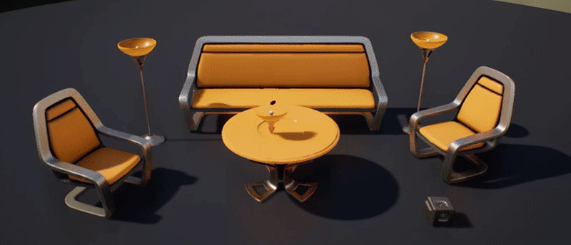
This effect is actually just a re-working of one of my old doodles, the effects is quite simple, but it seemed like a really nice use-case. I’ve seen similar effects being used for “Loot Pickup Effects” in games. It is a basic Vertex Deformation Shader under the hood
Overview
This effect basically uses a Vector3 input(Location of wormhole i.e area that sucks in geometry) to generate a Distance Gradient, then the pixels that are inside this sphere get sucked towards the center with a falloff controlled by the gradient strength. we will be creating this as a material Function inside UE4 so that it can be easily applied to any existing material that we have. So let’s get started!
Basic Concept
The basic concept behind this effect is to use a world space Distance Field Sphere Mask to blend between two different WorldPosition Offsets, one is the central location of the mask i.e center of the wormhole and the other is the regular location of the pixels in the world
Initial Setup
First there are a couple setups we need to make, so that we can feed the location of the wormhole from a Gameplay object or a Blueprint. In my case I use a Material Parameter Collection(MPC) to store the location value and then use it in the shader.
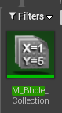
So in your content browser right-click>Materials & Textures>MaterialParameterCollection to create a new MPC Asset,give it a name(I named mine “M_Bhole_Collection”..seemed like a good idea at the time..),then double click to open it up and click on the “+” sign next to vector Parameters to add a new Vector Parameter to the collection. Name it “Texloc” or anything you want really, but this is the parameter we will store the location from the blueprint.
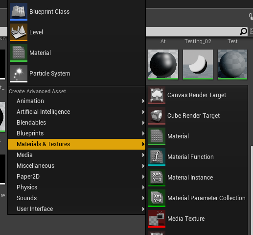
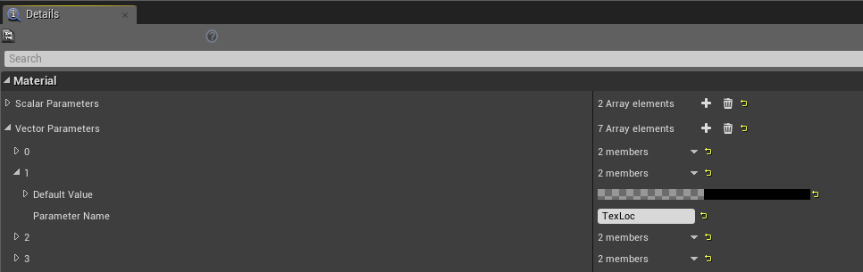
Setting up Blueprint Actor to Feed Wormhole Location
In this section we will set up a basic blueprint actor that we will use as our gameplay object whose location we will feed into the shader to serve as the Wormhole’s global Location
Create a new Blueprint Asset type Actor, give it a name(I called mine BP_Texture_Locator), open up the event graph and set it up as shown below:
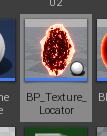
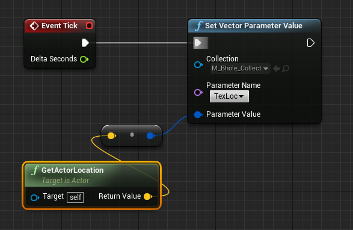
On the “Set Vector Parameter node”, when you click on the collection Paramter dropwon, it should list all of the MPC’s available in your project, choose the one you had created earlier. Then when you click the “Parameter Name” dropdown it will list all of the Vector Parameters available in that MPC. Choose the “TexLoc” parameter.
With this set up, now the location of this BP actor will be fed to the “TexLoc“ variable every tick, we can now use it in our shader to define the location of the Wormhole.
Next create a new Material, we use a material only because it is easier to test with while we make the shader. Later we will take all of the stuff created in this material and put it into a Material Function, this function will be where we put all of our shader math, we set this up as a material Function so that this Effect can easily be layered onto any exisitng surface shader.
Distance Gradient Mask
There’s multiple ways to apprach this part, one solution is to use a Distance Field Sphere mask as I’ve shown Post-Process-Scan-Effect
But i used a slightly different method this time, but it yeilds the same results:
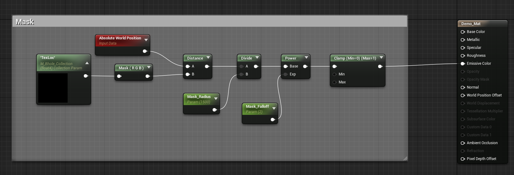
What this does is it creates, a spherical gradient based on the distance between the pixels and the location of the Blueprint actor
Go ahead and add a couple objects into your scene and apply the material we jsut made to them.Now drag the Blueprint Actor you made earlier into the level and try moving it around.You should see something like below:

The important thing here is to note how we read the Location of the Blueprint we set up earlier. Inside the shader, we can use a node called “Collection Parameter“.
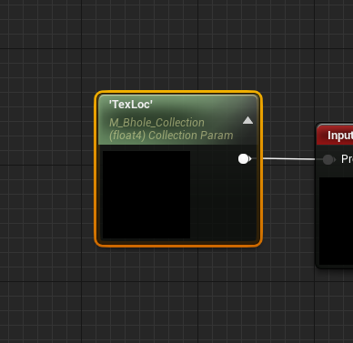
This node lets us read variables from MPC’s inside our shader. If you click the node and look at it’s details panel, you will notice that you can link the MPC asset you created and choose the parameter the node will reference.
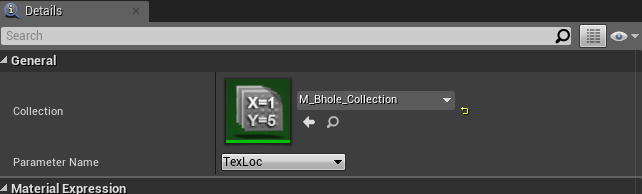
Deforming Vertices
The basic concept here is to crush all the vertices of the geo to a finite point defined by the location of the Blueprint. Look at the following example.
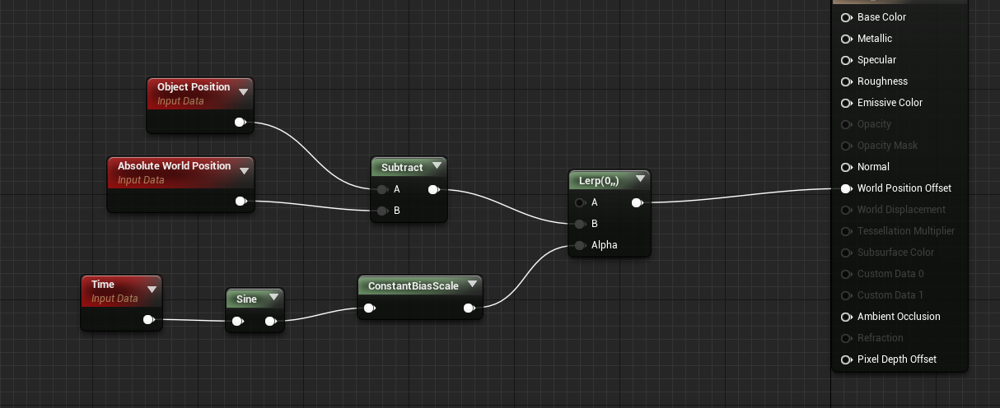
If you plug that into the World Position Offset pinof the material, you will get something like this
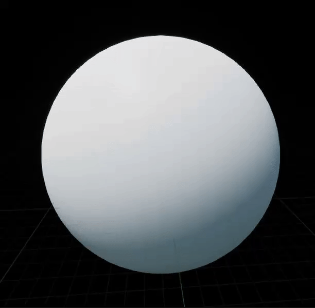
Absolute World Position - Object position gives us the localized world position of the object, so when we Lerp between it and a null value with a sine-wave as the alpha, the vertices contract to a finite point and expand back up. We use this same concept, but instead of using the “object position” we will use the Blueprint location from the MPC and instead of a sine-wave alpha we will use the scaling distance field mask.
We take the same logic, and replace Object position with the Location parameter, and then use teh gradient mask from the previous step as an alpha to lerp between the new WPO and a null value as shown below:
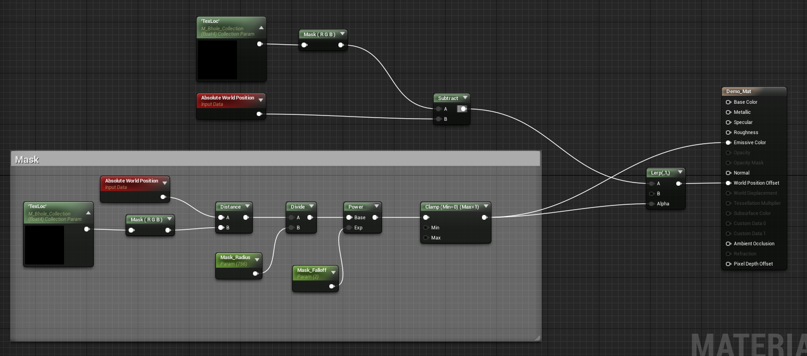
Now if you try moving the BP actor around in the level you’ll notice that the vertices of the meshes get pulled towards it’s center based on the gradient mask falloff.

Making the Material Function
At this point all the basic setups for the effect are complete, We can now wrap all this functionality into a Material Function so that, the effect can be easily layered on top of any existing shaders
Create a new material Function, I called mine MF_VertCrush and set it up as shown, below, it’s exactly the same as what I made before but with some tweaks:
Right click and open in new tab to view higher resolution:
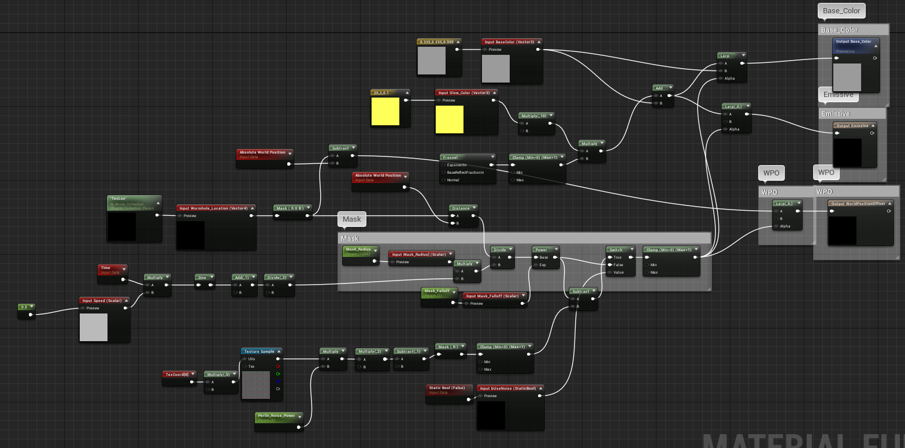
The Function has 3 Outputs:
BaseColor: To override the basecolor of the objects material
Emissive:To add emissive coloration to the shader.
WorldPositionOffset:This will output the modified WPO to the shader
And we create input parameters for any scalar or vector parameter that we need to read from the Objects surface shader as well as any parameters that we want to be adjustable, in the function like radius, falloff etc
In this instance I’ve multiplied the mask radius with a sine-wave to make the effect oscillate the way it does in the gif below, I’ve also added some basic fresnel emissive based on the gradient mask, so that areas affected by the wormhole, get a fresnel emissive.I’ve also subtracted a noise texture from the gradient mask to create some variation in strength.
In the details panel, enable “expose to library“. Now if you make a new material and right-click and search for your function name, it will show up in the dropdown menu:

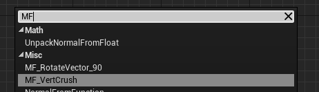
So now, you can basically access this function in any material and layer it on as shown below, by feeding the appropriate parameters into the function and using it’s outputs on the final output pins
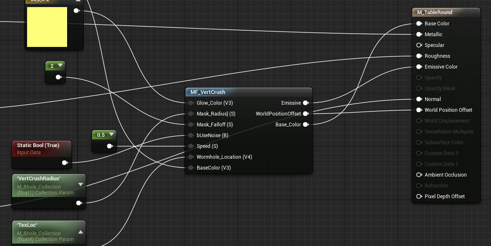
You can see the end results below, where I have applied the function to some of Epic’s demo assets. I hope you found this mini-tutorial useful, feel free to email me if you ahve any questions or suggestions!
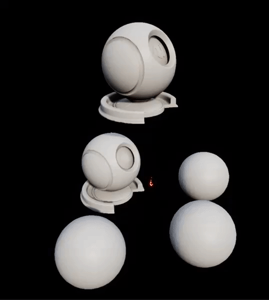
关于本文
本文作者 Master Gong Sheng, 许可由 CC BY-NC 4.0.